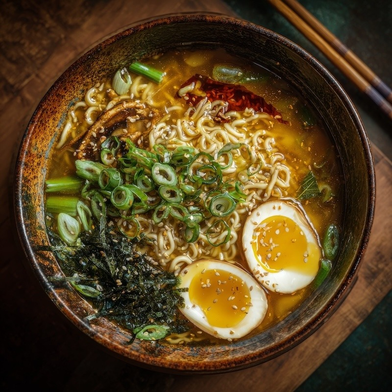

Home
Ramen

Shoyu Ramen
This homemade Ramen recipe has savory noodles and juicy chicken in a flavorful broth with vegetables and the best seasonings! This cozy recipe is easy to make and serve with soft boiled eggs and a sprinkling of green onions.
Ingredients
- Chicken stock (unsalted)
- Spring onions (scallions)
- Garlic
Steps
Bring the stock to a boil over medium high heat (or high heat, depending on your stove), with all the aromatics.
Then reduce the heat to a medium and let it simmer to infuse all the flavors.